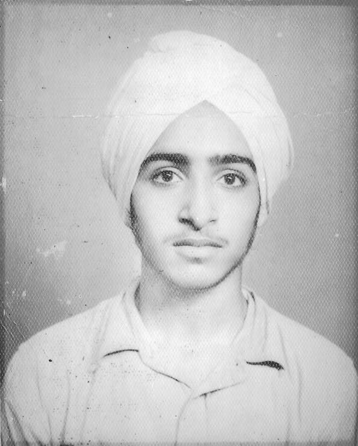

Below is the oldest picture I've ever seen of my Dad. My Mom says he was 14 or 15, which means it was taken around 1960. This was almost a decade before he immigrated to the states on a student visa in 1969. After getting a green card due to a shortage of electrical engineers in the US, he met my Mom in 1972 on a blind date. They got married three months later, and were celebrating 45 years of marriage when he died a few days shy of his 71st birthday in 2017.
This was the eulogy I gave at his funeral.
Goodbye, Dad
March 4, 2017
Thank you all for coming today to celebrate my Dad's life. We have several other folks scheduled to speak after me, and a little later, we will welcome anyone else who wants to come up and share happy memories to do so.
I've been thinking a lot about my Dad over the last few days, and have been hearing wonderful memories folks have of him from all over the world. I've heard people talk about how charitable he was and how quickly he was willing to help anyone. I’ve heard stories about how brilliant he is, and how often he used that brilliance to make jokes that he was the only one brilliant enough to get. But he was always trying to make people laugh and feel comfortable.
I think the people who speak after me will likely reiterate some of those aspects of his personality, but I want to talk about something different today. Because when I think of my Dad, my memories most often center around his love of adventure. Some of my earliest, most vivid childhood memories of my Dad are him taking me to see American adventure movies. When I was in first grade, he took me out of school early to go see Return of the Jedi. And then the next year he took the entire family to see Indiana Jones and the Temple of Doom. He loved every second of that movie, even though its portrayal of India was much different from the India he remembered.
But reflecting on my Dad’s life, I’m completely in awe of his real-life adventures. And in my imagination, his most exciting adventure had to be the one that started on that fateful flight that he took from India to the United States during the summer of 1969.
In fact, when I think about my Dad on that airplane in 1969, I’m reminded of Indiana Jones, who eventually became one of his favorite characters from American cinema. Of course he wasn’t exactly Indiana Jones. Although my Mom might disagree, I don’t think he looked much like Harrison Ford. And instead of a fedora, he wore a turban. Instead of a bullwhip, he carried a razor-sharp intellect. And instead of searching for some long-lost relic, he was searching for something more elusive -- the American dream.
It’s nearly 7000 miles from Shankar, Punjab in the Northern part of India to Seattle, WA where he would ultimately attend graduate school. He had never actually left India before that. Can you imagine the courage it took to make that flight, alone? Has anyone here ever traveled 7000 miles from home and arrived in a foreign country with virtually no money, no family to greet them, and no friends to speak of? I haven’t. In fact, I remember going away to college when I was 18 years old. My home was in Charleston, SC and college was in Columbia, SC. That was about 100 miles and it was hard for me. So hard, in fact, that I dropped out and moved back home within a few months. At 18, I definitely didn’t share my Dad’s love of adventure.
But, as we all know, my Dad’s adventures didn’t end in Seattle. After finishing his master’s degree, he found himself traveling another 3000 miles from Washington to South Carolina where he eventually earned a green card, found a job with Southern Bell, and met my Mom on a blind date. And what an adventure meeting my Mom must have been! Her family was from a completely different culture. They had a whirlwind romance that lasted 3 months before they got married!
Without a second thought, he immersed himself in rural South Carolina culture and won over my Mom’s family with his innate charm, his brilliance, and -- of course -- his knowledge of agriculture he picked up while growing up in rural India. He loved my Mom’s family, but he always adored his family in India. We know that because he eventually arranged to have both of his parents, his 4 brothers and his 2 sisters come to the United States so they too could find their own version of the American dream. When I look out in the audience, I see my Mom and my Dad’s family here. It makes me feel good to know he touched so many lives from different parts of the world.
Even as he aged, my Dad never lost his love of adventure. I don’t remember much about the first few times our family moved -- from Orangeburg to Charleston to Atlanta to Aiken. But I do vividly remember him picking me up from school one day when I was in the 7th grade. “I’ve got something to tell you, and you’re going to have to tell your Mom…” he said with a twinkle in his eye. “...we’re moving to Chicago.”
I think my Mom was less excited about that adventure, but my Dad loved it, at least at first. Then it snowed. How many of you have ever lived in a snowy climate? My Dad had never lived in a cold climate before then, and I remember the first snow in Chicago -- he tried to shovel our driveway with one of those steel dirt shovels. In retrospect, those things don’t work so well. I can still remember watching him from the front window of our house while he shoveled about half of the driveway with that thing until a neighbor, probably feeling bad for him, came over and let him borrow a real plastic snow shovel.
I remember another time in Chicago when I asked him to take me and a friend to an 8 hour hard rock concert that had Motley Crue headlining. My Dad was always interested in learning more about American culture, so he bought our tickets and drove me, my friend and my Mom to Alpine Valley, WI to that concert. And I think he actually enjoyed it! I remember partway through the show looking down at my Mom, curled up almost in the fetal position, with her hands over her ears, praying for it to end. My Dad, on the other hand, was standing up on the chair, smiling and watching.
Of course, his greatest adventure started several years after that -- ‘retirement.’ When he retired from the phone company in 1996, he and my Mom moved to her home in rural Allendale, SC where he lived the retirement lifestyle for a few months. It wasn’t long before he was recruited to work for the Savannah River Site, where he spent a few years. After that, being the renaissance man that he was, he transitioned to teaching and worked as a Computer Science teacher at USC Salkehatchie in both Allendale and Walterboro.
I know without a doubt that this time in Allendale was the best time of his life. To my Dad, retirement represented the fulfillment of his lifelong journey to find the American dream after years and years of hard work. The fact that he was able to live on ‘the farm’ (as he called it) out in rural SC was icing on the cake for him.
In retirement, he became the most positive, friendly person you would ever meet. In addition to working, he spent his time tinkering with electronics and computers, helping local folks with computer problems and finances, and enjoying the fresh air by going deer ‘hunting’ with my Mom on their land. I say ‘hunting’ in quotes because we know he never took any guns with him -- he and my Mom would just sit up in deer stands and watch the deer. And of course, he always loved sharing his land and his time with his numerous dogs, especially his beloved Chico -- the meanest, sweetest chihuahua mix you’ll ever meet.
And despite some false starts, I eventually also found my Dad’s love of adventure. After college, I moved a little further from home -- to Athens, GA -- which was about 250 miles from home, but still nowhere near the 7000 miles he went. And after that I spent time at a few places that were further away -- Chattanooga, TN and Asheville, NC.
But in 2013 I was offered a job in the capital of Silicon Valley -- San Jose, CA. I was super-excited and accepted the job without much hesitation. A few days later was when my Dad was diagnosed with cancer. I remember having a conversation with him on the phone where I told him that there was still time -- I could turn down the offer and stay in the southeast.
He wouldn’t have it. He said ‘no way...not a chance.’ He was excited about the adventure I was about to go on, and I think he looked at it as an opportunity to live vicariously through me.
I talked to him frequently over the last three and a half years. He was always excited to hear about my adventures in Silicon Valley, and my first-hand experiences with all of the technology companies that he adored -- Netflix, Google, Apple, Facebook. We brought a picture today of him standing outside of Apple headquarters when he came to visit. This is after he had been suffering with cancer for a few years -- but you can still see the excitement on his face.
I remember one conversation vividly -- he told me how proud he was of me, and how he was actually a little jealous. Even at the height of his illness, he was still wishing he was out on the adventure with me.
There’s a scene in Indiana Jones and the Temple of Doom where death is referred to as ‘The Great Unknown Mystery.’ In a lot of ways, it’s not unlike the adventure my Dad went on in 1969 across the ocean. He’s traveling alone, to an unknown place and he doesn’t know what’s waiting for him. I’ve been finding comfort in thinking about him on that airplane over the Atlantic ocean in 1969, thinking about all the adventures that await him in the afterlife, whatever those might look like. As in life, I’m sure he will definitely make the most of them. I look forward to seeing him again, and hopefully joining him on this greatest adventure one day.
I know many of you are wondering how best to honor my Dad’s life. It’s actually not too hard -- be charitable to friends and family, use your knowledge and talents to help your community, and do something courageous and adventurous -- something way out of your comfort zone. I know he’ll be happy if you do.
